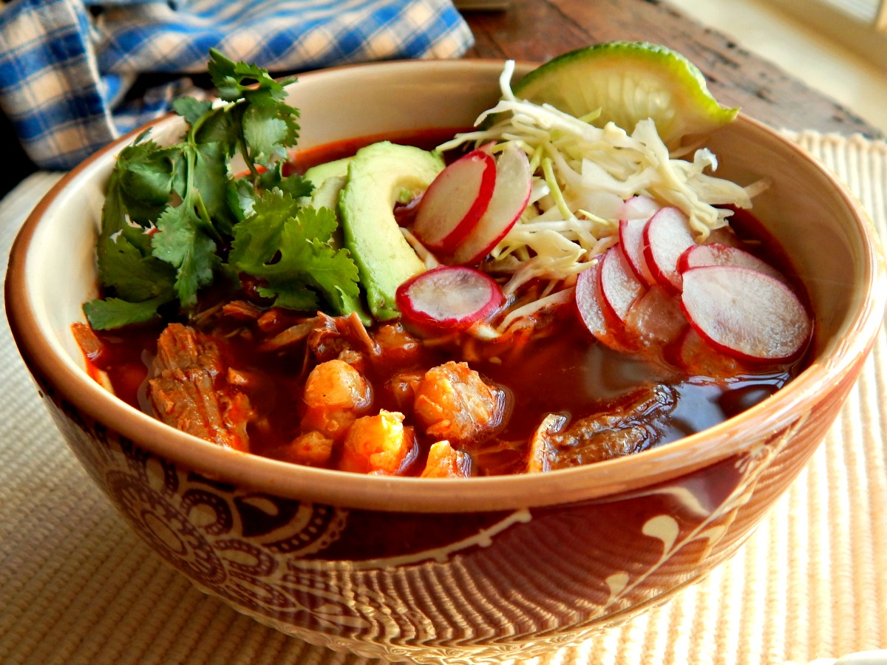

Posole

Posole is a nice and tasty way to warm you up on a cold day!
This dish only takes about 1.5 hours to make.
Ingredients
- 1/2 lb green chile peppers, sliced in half lengthwise and seeded
- 3 tablespoons olive oil
- 1/2 onion, chopped
- 2 tablespoons minced garlic
- 1 lb boneless pork loin, cut into 1-inch cubes
- 1 (29 ounce) can white hominy, drained
- 1 (29 ounce) can yellow hominy, drained
- 3 cups chicken broth
- 1 1/2 cups water
- 1/4 cup ground cumin
- 1/4 cup chili powder
- 3 tablespoons salt
- 1 teaspoon ground black pepper
Cooking Instructions
- Set oven rack about 6 inches from the heat source and preheat the oven's broiler. Line a baking sheet with aluminum foil.
- Place the peppers with cut sides down onto the prepared baking sheet.
- Cook under the preheated broiler until the skin of the peppers has blackened and blistered, 5 to 8 minutes.
Place the blackened peppers into a bowl and tightly seal with plastic wrap. Allow the peppers to steam as they
cool, about 20 minutes.
Remove plastic wrap and carefully remove and discard pepper skins. Dice peppers.
- Heat olive oil in a large pot over medium-high heat. Cook and stir onion and garlic in hot oil until tender and fragrant, 5 to 10 minutes.
- Stir pork into onion and garlic; cook and stir until pork is browned, 5 to 10 minutes. Add diced green chiles to pork;
cook and stir until fragrant, 5 minutes.
- Pour white hominy, yellow hominy, chicken broth, water, cumin, chili powder, salt, and black pepper into pork mixture.
Bring mixture to a boil
and cook for 15 minutes; reduce heat to medium-low and simmer until flavors blend and pork is tender, at least 1 hour.